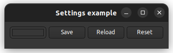

|
xtd
0.2.0
|
Loading...
Searching...
No Matches
settings_example2.cpp
demonstrates the use of xtd::forms::settings component.
- Windows


- macOS


- Gnome


#include <xtd/forms/application>
#include <xtd/forms/button>
#include <xtd/forms/color_picker>
#include <xtd/forms/form>
#include <xtd/forms/settings>
using namespace xtd::drawing;
using namespace xtd::forms;
auto main()->int {
auto main_form = form::create("Settings example", form_start_position::manual);
auto back_color_picker = color_picker::create(main_form, main_form.back_color(), {10, 10}, {75, 25});
back_color_picker.color_picker_changed += [&] {
main_form.back_color(back_color_picker.color());
};
auto save_button = button::create(main_form, "&Save", {90, 10});
save_button.click += [&] {
};
auto reload_button = button::create(main_form, "&Reload", {170, 10});
reload_button.click += [&] {
back_color_picker.color(main_form.back_color());
};
auto reset_button = button::create(main_form, "R&eset", {250, 10});
reset_button.click += [&] {
reload_button.perform_click();
};
reload_button.perform_click();
application::run(main_form);
}
Represents an ordered pair of integer x- and y-coordinates that defines a point in a two-dimensional ...
Definition point.h:54
Stores an ordered pair of integers, which specify a height and width.
Definition size.h:31
void write(const xtd::ustring &key, const xtd::ustring &value)
Writes a specified value for specified key.
Definition settings.h:70
xtd::ustring read(const xtd::ustring &key, const xtd::ustring &default_value)
Reads a value for specified key. If not found default value is used.
Definition settings.h:50
The xtd::drawing namespace provides access to GDI+ basic graphics functionality. More advanced functi...
Definition actions_system_images.h:11
The xtd::forms namespace contains classes for creating Windows-based applications that take full adva...
Definition xtd_about_box.h:12
Generated on Tue Feb 20 2024 18:56:21 for xtd by Gammasoft. All rights reserved.